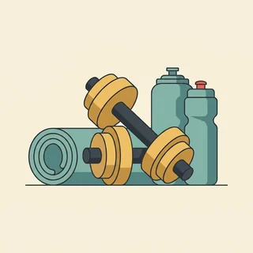

deutschoderwas · Sprechclub · Woche 7 · Strang D · Teil 2 · Donnerstag, 29. Oktober
Über sich selbst sprechen: Was man nicht kann — freundlich sagen
Am Dienstag ging es um die Stärken. Heute um die andere Hälfte — und die ist im Deutschen oft die wichtigere. Wer sagt, was er noch nicht kann, wirkt nicht schwächer, sondern verlässlicher: Man weiß jetzt, woran man bei ihm ist. Es gibt nur eine Bedingung dafür, und die entscheidet alles: Der Satz darf nicht nach Entschuldigung klingen.
Dein Niveau
Gleiches Thema, andere Sätze. Wechsle jederzeit — probier ruhig beide Seiten aus.
Der Moment, in dem man nichts versteht
Eine Durchsage im Bahnhof, drei Sätze schnell gesprochen, und alle um dich herum setzen sich in Bewegung. Du hast nichts verstanden. Es gibt jetzt zwei Möglichkeiten: so tun als ob — oder fragen. Die zweite ist unangenehmer und in fünf von fünf Fällen besser. Genau darum geht es heute: den unangenehmen Satz so zu sagen, dass er niemanden stört.
Wann hast du zuletzt etwas nicht verstanden und nicht nachgefragt?
Was sagst du, wenn jemand zu schnell spricht?
Was fällt dir auf Deutsch noch schwer?
Warum tun wir manchmal so, als hätten wir verstanden?
Was passiert im schlimmsten Fall, wenn man nachfragt?
Wie merkt man einem Menschen an, dass er nur so tut?
🔑 Die Regel des Abends: Sag, was du noch nicht kannst — nicht, was du nicht kannst. Ein einziges Wort, und aus einem Urteil über dich wird ein Zwischenstand.
Warum Ehrlichkeit hier besser ankommt als Mut
In deutschen Teams gilt eine unausgesprochene Regel: Lieber jemand, der früh sagt, dass es eng wird, als jemand, der es bis zum Schluss allein versucht. Wer eine Grenze nennt, macht sich nicht klein — er macht sich planbar. Und Planbarkeit ist im Berufsleben hier fast das höchste Lob, das es gibt.
Sagst du im Kurs, wenn du etwas nicht verstanden hast?
Wer hilft dir, wenn du nicht weiterkommst?
Was möchtest du bis Weihnachten besser können?
Ist es in deinem Land in Ordnung, im Beruf eine Schwäche zuzugeben?
Wann ist Ehrlichkeit über eigene Grenzen ein Risiko?
Wie sagt man eine Grenze, ohne sich dabei zu entschuldigen?
💡 Das Wort, das alles kippt:leider. Ich kann das leider nicht klingt nach Entschuldigung. Das kann ich noch nicht — ich arbeite daran klingt nach jemandem, der weiß, wo er steht. Streich leider heute Abend aus jedem Satz.
Kurz zurück: Dienstag in zwei Minuten
Falls du Teil 1 verpasst hast — das hier reicht, um heute mitzumachen.
die Stärkedas Beispielbelegenuntertreibendas Auftretensorgfältigzuverlässigsich vorstellendas Vorstellungsgesprächdie Zusammenarbeit
Situation statt Adjektiv
So ging die RegelNicht: Ich bin sehr organisiert. Sondern: Bei uns hat niemand die Termine im Blick behalten, also habe ich eine Liste geführt.
Ich bin jemand, der …
So ging der SatzbauDas Relativpronomen nimmt das Geschlecht vom Wort davor, den Fall aus dem Nebensatz. Und das Verb steht ganz am Ende.
Warum wirkt ein Beispiel stärker als ein Adjektiv?
Was ist ein fremdes Lob und warum darf es deutlicher sein?
Wie heißt der Satz vollständig: Ich bin jemand, ___ man Probleme geben kann?
🔁 Zu zweit, dreißig Sekunden: Einer nennt seine Stärke von Dienstag in einem Satz, der andere fragt einmal nach: Woran hat man das gemerkt? Danach drehen wir die Frage um — heute geht es um das, was noch nicht sitzt.
Zwölf Wörter für den ehrlichen Teil
Sag jedes Wort laut — mit Artikel. Und häng gleich einen Satz an, in dem noch nicht vorkommt.
die Schwäche
„Meine größte Schwäche ist das Sprechen unter Zeitdruck.“
💡 Vorsicht mit dem Wort im Gespräch: Es klingt härter, als es gemeint ist. Sag im Zweifel lieber Was mir weniger liegt oder Woran ich arbeite — dieselbe Aussage, freundlicherer Ton.
der Fehler
„Der Fehler war meiner, das habe ich sofort gesagt.“
💡 Zwei Wendungen, die du oft brauchst: einen Fehler machen und aus Fehlern lernen. Ein Fehler ist im Deutschen kein Charakterurteil — solange man ihn selbst benennt.
zugeben
„Ich gebe zu, dass ich damit noch keine Erfahrung habe.“
💡 Trennbar: ich gebe zu. Und merk dir den Unterschied im Ton: zugeben klingt nach Größe, gestehen nach Gericht. Im Alltag nimmst du immer zugeben.
nachfragen
„Darf ich kurz nachfragen? Ich habe das letzte Wort nicht verstanden.“
💡 Trennbar, und die höflichste Einleitung überhaupt: Darf ich kurz nachfragen? Wer nachfragt, gilt hier als aufmerksam — nicht als langsam.
die Lücke
„Bei den Fachbegriffen habe ich noch Lücken.“
💡 Ein sehr nützliches Wort, weil es sachlich klingt: Eine Lücke kann man füllen, eine Schwäche muss man sein. Dazu eine Lücke schließen.
die Rückmeldung
„Ich hätte gern eine kurze Rückmeldung, bevor ich weitermache.“
💡 Das deutsche Wort für Feedback — beides ist üblich. Um eine Rückmeldung bitten ist der Satz, mit dem man zeigt, dass man dazulernen will.
notieren
„Ich notiere mir das lieber, sonst geht es unter.“
💡 Klingt erwachsener als aufschreiben und ist im Beruf das übliche Wort. Reflexiv mit Dativ: ich notiere mir etwas.
zuhören
„Beim schnellen Sprechen komme ich beim Zuhören noch nicht mit.“
💡 Trennbar und mit Dativ: Ich höre dir zu, nicht dich. Der Unterschied zu hören: Hören passiert von allein, zuhören ist eine Entscheidung.

die Übung
„Das ist reine Übung — vor einem Jahr konnte ich es gar nicht.“
💡 Die beste Antwort auf jede eigene Schwäche: Das ist Übungssache. Und das Sprichwort dazu kennt hier wirklich jeder: Übung macht den Meister.
der Zeitdruck
„Unter Zeitdruck vergesse ich manchmal die Artikel.“
💡 Immer mit unter: unter Zeitdruck stehen oder unter Zeitdruck arbeiten. Eine sehr gute Einschränkung, weil sie sagt: Es liegt an der Situation, nicht am Können.
die Prüfung
„Für die Prüfung fehlt mir noch das freie Sprechen.“
💡 Eine Prüfung ablegen, bestehen oder durchfallen — drei Wörter, die zusammengehören. Und Vorsicht: Es heißt durch die Prüfung fallen, nicht verlieren.
die Durchsage
„Die Durchsage habe ich nicht verstanden, können Sie mir helfen?“
💡 Der Klassiker unter den Verstehproblemen — und niemand nimmt es dir übel. Der ganze Satz dazu: Entschuldigung, was wurde gerade durchgesagt?
💡 Spiel „Noch nicht“: Reihum sagt jeder einen Satz über etwas, das er nicht kann — und muss ihn sofort mit noch nicht und einem Plan wiederholen. Ich kann keine Präsentation halten. → Freie Präsentationen kann ich noch nicht, ich übe das gerade mit Sprachnachrichten.
Entschuldigung, Ausrede oder Zwischenstand?
Dieselbe Information — drei völlig verschiedene Wirkungen. Wer den Unterschied kennt, kann eine Schwäche nennen und trotzdem sicher wirken. Und alle drei erkennt man an einem einzigen Wort im Satz.
🙇
die Entschuldigung
du bittest um Nachsicht für dich selbst
Tut mir leid, mein Deutsch ist leider nicht so gut.
🌫️
die Ausrede
du schiebst es auf etwas anderes
Dafür hatte ich einfach nie die richtige Gelegenheit.
📈
der Zwischenstand
du sagst, wo du stehst und wohin es geht
Am Telefon bin ich noch unsicher — ich übe das gerade.
✅ Wirkt souverän
Fachbegriffe verstehe ich noch nicht alle. Ich frage dann nach und schreibe sie mir auf.
Warum das funktioniertZwei Sätze, zwei Teile: die Grenze und der Umgang damit. Der zweite Satz ist der wichtigere — er zeigt, dass die Lücke nicht liegen bleibt.
❌ Wirkt unsicher
Tut mir leid, ich verstehe leider immer noch nicht alles.
Das ProblemTut mir leid und leider in einem Satz. Du entschuldigst dich für etwas, das völlig normal ist — und der andere fühlt sich verpflichtet, dich zu trösten.
✅ Wirkt souverän
Das schaffe ich bis Freitag nicht mehr in Ruhe. Bis Montag ja — oder ich lasse den letzten Teil weg.
Warum das funktioniertEin Nein mit zwei Auswegen. Wer sagt, was stattdessen geht, hat nicht abgelehnt, sondern mitgedacht — und darauf reagieren Menschen fast immer freundlich.
❌ Wirkt unsicher
Ich versuche es, aber ich verspreche nichts.
Das ProblemEin halbes Ja ist schlimmer als ein klares Nein: Der andere plant damit, und am Freitag stehen beide schlechter da als vorher.
✅ Wirkt souverän
Mit dem Programm habe ich noch nicht gearbeitet. Wenn mir das jemand einmal zeigt, komme ich zurecht.
Warum das funktioniertDie Grenze steht im ersten Satz, die Bedingung im zweiten. Du sagst damit: Das ist kein Können-Problem, sondern ein Zeitpunkt-Problem — und genau so hört es der andere.
❌ Wirkt unsicher
Damit kenne ich mich überhaupt nicht aus, ich bin da echt schlecht.
Das ProblemÜberhaupt nicht und echt schlecht sind Urteile über dich als Person. Sie sagen nichts über die Sache — und sie lassen sich nachher schwer zurücknehmen.
Zwei Sätze, immer in dieser Reihenfolge:
Die Grenze: sachlich, mit noch nicht. Freie Präsentationen kann ich noch nicht.
Der Umgang damit: was du tust oder brauchst. Ich übe das gerade — und ich bereite mir Stichpunkte vor.
Und drei Wörter, die du dabei streichst: leider, eigentlich, nur. Alle drei entschuldigen dich für etwas, wofür sich niemand entschuldigen muss. Ich kann das leider eigentlich nur ein bisschen — dieser Satz sagt weniger als gar nichts.
🎯 Zu zweit, eine Minute: Einer sagt einen Satz mit leider oder Tut mir leid, der andere baut ihn sofort um: ohne Entschuldigung, mit noch nicht und einem zweiten Satz dazu. Ihr hört den Unterschied sofort — und die anderen im Raum auch.
Vier Bausteine für den ehrlichen Satz
Die Grenze nennen, einen Ausweg anbieten, um Hilfe bitten, nach einer Rückmeldung fragen. Vier Handgriffe — und aus einem unangenehmen Moment wird ein normales Gespräch.
1 · 🎚️ Die Grenze nennen Das kann ich noch nicht.Damit habe ich noch keine Erfahrung.Da bin ich noch unsicher.Das liegt mir weniger.
So klingt esFrei sprechen kann ich noch nicht so gut, da bin ich unsicher.
2 · 🔀 Einen Ausweg anbieten Ich könnte aber …Was ich machen kann, ist …Bis Montag schaffe ich es.Mit ein bisschen Zeit gern.
So klingt esHeute schaffe ich das nicht mehr — bis Montag aber gern.
3 · 🙋 Um Hilfe bitten Könnten Sie mir das einmal zeigen?Darf ich kurz nachfragen?Können Sie das bitte wiederholen?Wie sagt man das richtig?
So klingt esKönnten Sie mir das einmal zeigen? Danach komme ich zurecht.
4 · 🔄 Nach Rückmeldung fragen War das so richtig?Sagen Sie mir bitte, wenn etwas fehlt.Ich hätte gern eine kurze Rückmeldung.Passt das so für Sie?
So klingt esSagen Sie mir bitte, wenn etwas fehlt — ich baue es dann ein.
1 · 🎚️ Genaue Grenze Woran ich noch arbeite, ist …In diesem Bereich fehlt mir die Routine.Das traue ich mir noch nicht allein zu.Unter Zeitdruck wird es bei mir eng.
So klingt esWoran ich noch arbeite, ist das freie Sprechen unter Zeitdruck — mit Vorbereitung geht es gut.
2 · 🔀 Ausweg mit Bedingung Machbar wäre es, wenn …Ich übernehme den Teil, für den ich einstehen kann.Vollständig nicht — der erste Teil schon.Dafür bräuchte ich eine Einarbeitung.
So klingt esVollständig schaffe ich es nicht — den ersten Teil übernehme ich, für den Rest bräuchte ich jemanden dazu.
3 · 🙋 Hilfe holen, ohne klein zu wirken Zeigen Sie es mir einmal, dann habe ich es.Ich frage lieber vorher als hinterher.Damit ich nichts falsch mache:An welcher Stelle steige ich am besten ein?
So klingt esIch frage lieber einmal vorher, als es zweimal zu machen — an welcher Stelle fange ich am besten an?
4 · 🔄 Rückmeldung einholen Ich hätte gern eine Einschätzung, bevor ich weitermache.Woran würden Sie sehen, dass es gut geworden ist?Sagen Sie mir gern, was fehlt.Ich nehme das mit und melde mich am Freitag.
So klingt esWoran würden Sie sehen, dass es gut geworden ist? Dann weiß ich, worauf ich achten muss.
Verb die Grenze der Ausweg Höflichkeit
📣 Sofort anwenden: Nimm etwas, das du wirklich noch nicht kannst, und sag alle vier Bausteine hintereinander — Grenze, Ausweg, Bitte, Rückmeldung. Kein leider, kein tut mir leid. Vier Sätze, und niemand hält dich für schwach.
Vier Situationen — zwei Runden
Runde 1: Lest den Dialog zu zweit laut. Runde 2: Klappt die Zeilen zu und sprecht frei — nur die Stichwörter bleiben.
Dialog 1 · „Die Frage im Gespräch“
Nach den Stärken kommt im Vorstellungsgespräch fast immer die andere Frage. A fragt, B antwortet — ohne sich zu entschuldigen und ohne Ausrede.
A
Und wo würden Sie sagen, liegen Ihre Schwächen?
B
Am ehesten beim freien Sprechen unter Zeitdruck. Mit Vorbereitung ist es kein Problem, spontan brauche ich länger.
🗣️ Grenze und Einschränkung in einem Zug. Beachte: kein Problem, nicht nicht ein Problem — vor einem Nomen ohne Artikel steht kein.tippen = Hilfe zeigen
A
Und was tun Sie dagegen?
B
Ich nehme mir seit einem halben Jahr jede Woche Sprachnachrichten auf. Perfekt ist es noch nicht, aber der Unterschied ist deutlich.
🗣️ noch nicht statt nicht — das ist der ganze Trick des Abends. Und ein Beweis dahinter: Wer eine Übung nennt, hat schon angefangen.tippen = Hilfe zeigen
A
Wäre eine Präsentation vor dreißig Leuten ein Problem?
B
Allein noch nicht. Zu zweit sofort — und in einem halben Jahr würde ich es allein machen.
🗣️ Ein ehrliches Nein mit einem Zeitplan dahinter. Das wirkt souveräner als ein schnelles Ja, das man später zurücknehmen muss.tippen = Hilfe zeigen
Dialog 2 · „Im Kurs nachfragen“
Alle nicken, nur B hat den letzten Schritt nicht verstanden. Der Moment, in dem die meisten schweigen — und in dem Nachfragen sich immer lohnt.
A
Alles klar so weit? Dann machen wir mit Aufgabe vier weiter.
B
Darf ich kurz nachfragen? Den Schritt davor habe ich noch nicht ganz verstanden.
🗣️ Darf ich kurz nachfragen ist die höflichste Bremse, die es gibt. Und noch nicht ganz ist genauer als nicht — es sagt, dass ein Teil schon sitzt.tippen = Hilfe zeigen
A
Natürlich. Welche Stelle genau?
B
Ab dem Punkt, wo das Verb nach hinten wandert. Bis dahin komme ich mit.
🗣️ Sag wo genau es aufgehört hat. Wer die Stelle benennt, bekommt eine kurze Antwort — wer nur alles sagt, bekommt die ganze Erklärung noch einmal.tippen = Hilfe zeigen
A
Gut, dass Sie fragen. Das ist genau die Stelle, an der es meistens hakt.
B
Ich notiere es mir. Dann übe ich das bis nächste Woche.
🗣️ Der Satz danach: notieren und einen Zeitpunkt nennen. So wird aus dem Nachfragen ein Plan statt einer Peinlichkeit.tippen = Hilfe zeigen
Dialog 3 · „Die Nachricht am Abend“
Die Kollegin fragt kurzfristig nach einer Aufgabe für morgen früh. B kann sie nicht übernehmen — und schreibt trotzdem eine Antwort, die niemanden verärgert.
A
Kannst du morgen früh die Auswertung übernehmen? Ich schaffe es nicht.
B
Bis morgen früh nicht mehr in Ruhe — ich habe um neun den Termin mit der Schule.
🗣️ nicht mehr heißt: Es ginge, aber die Zeit reicht nicht. Und der Grund kommt in einem halben Satz, ohne lange Erklärung.tippen = Hilfe zeigen
A
Und danach?
B
Ab elf gern. Wenn es früher sein muss, kann ich dir den Teil mit den Zahlen abnehmen — der geht schnell.
🗣️ Zwei Auswege statt eines Neins: ein anderer Zeitpunkt oder ein kleinerer Teil. Damit hat die Kollegin etwas zu entscheiden statt nur zu ärgern.tippen = Hilfe zeigen
A
Elf reicht. Danke dir.
B
Mach ich. Sag mir bitte kurz, worauf du besonders achtest — dann muss ich es nicht zweimal machen.
🗣️ Nach einer Rückmeldung fragen, bevor man anfängt. Das kostet einen Satz und spart oft eine ganze Runde.tippen = Hilfe zeigen
Dialog 4 · „Am Bahnhof“
Die Durchsage war schnell und undeutlich. B hat nichts verstanden und fragt eine fremde Person — freundlich, konkret, in zwei Sätzen.
A
Na super, jetzt auch noch Gleiswechsel.
B
Entschuldigung, ich habe die Durchsage nicht verstanden. Ging es um den Zug nach Köln?
🗣️ Erst sagen, was fehlt, dann eine konkrete Frage. Wer nur Was hat er gesagt? fragt, bekommt die ganze Durchsage noch einmal — und versteht sie wieder nicht.tippen = Hilfe zeigen
A
Ja, der fährt jetzt von Gleis acht.
B
Von acht statt von drei, richtig? Ich wiederhole lieber, mein Hörverstehen ist noch nicht so sicher.
🗣️ Rückversichern durch Wiederholen. Und die Begründung dahinter ist keine Entschuldigung, sondern eine Information — sie klingt völlig normal.tippen = Hilfe zeigen
A
Genau, Gleis acht. Da vorne die Treppe hoch.
B
Danke, das hilft mir sehr. Sonst hätte ich hier noch eine Stunde gestanden.
🗣️ Ein kurzer Dank mit einem Grund dahinter. Menschen helfen dir beim nächsten Mal lieber, wenn sie merken, dass es etwas gebracht hat.tippen = Hilfe zeigen
🎭 Und jetzt ihr: Spielt Dialog 1 mit euren eigenen Antworten. Verbotene Wörter: leider, eigentlich, tut mir leid. Wer eines benutzt, fängt die Antwort noch einmal an.
🧩 nicht, kein, noch nicht — die Verneinung
Am Dienstag ging es darum, wie man etwas beschreibt. Heute darum, wie man es verneint — und zwar so, dass der Satz freundlich bleibt. Drei Entscheidungen: nicht oder kein, wohin mit nicht, und welches kleine Wort davor die Härte nimmt.
Die erste Frage ist immer dieselbe: Verneinst du ein Nomen oder etwas anderes? Vor einem Nomen mit ein oder ganz ohne Artikel steht kein — Ich habe keine Erfahrung damit. Bei allem anderen steht nicht — bei Verben, Adjektiven, Namen und bei Nomen mit der, die, das oder mein. Und nicht hat einen festen Platz: möglichst weit hinten, aber immer vor dem, was es verneint.
🅰️Nomen mit ein oder ohne ArtikelIch habe keine Erfahrung.
▾
🅱️Alles andereIch kenne das Programm nicht.
▾
🅲nicht vor dem zweiten VerbteilIch habe das nicht gemacht.
▾
🅳Der freundliche ZusatzDas kann ich noch nicht.
SubjektDas
Verbkann ich
der freundliche Zusatznoch
die Verneinung ans Endenicht.
nicht oder kein — eine Frage, eine Antwort
Schau nur auf das Wort, das verneint wird. Steht dort ein Nomen mit ein oder ganz ohne Artikel, nimmst du kein und beugst es wie ein. In allen anderen Fällen nimmst du nicht. Sag die Reihe laut — nach sechs Beispielen hörst du es von allein.
1️⃣
kein
vor Nomen mit ein oder ohne Artikel
Ich habe keine Erfahrung damit.
2️⃣
nicht
bei Verben, Adjektiven und bestimmten Nomen
Die Durchsage habe ich nicht verstanden.
3️⃣
Der Platz von nicht
so weit hinten wie möglich, aber vor dem zweiten Verbteil
Ich kann das heute nicht mehr schaffen.
Ich habe keine Zeit.Ich habe die Zeit nicht.Das ist kein Problem.Das Problem kenne ich nicht.Ich bin keine Expertin.Ich bin nicht sicher.
noch nicht, nicht mehr, kaum — der Ton entscheidet
Dieselbe Verneinung, drei verschiedene Botschaften. noch nicht sagt: Es kommt. nicht mehr sagt: Es war da, jetzt reicht die Zeit nicht. kaum sagt: fast nicht. Diese drei Wörter sind der ganze Unterschied zwischen einem harten und einem freundlichen Satz.
⏳
noch nicht
ein Zwischenstand, kein Urteil
Frei sprechen kann ich noch nicht.
🛑
nicht mehr
es geht sich zeitlich nicht mehr aus
Bis Freitag schaffe ich das nicht mehr.
🪶
kaum, weniger, selten
weicher als ein klares nicht
Damit habe ich kaum gearbeitet.
Das kann ich noch nicht.Das schaffe ich heute nicht mehr.Damit habe ich kaum Erfahrung.So schnell komme ich nicht mit.Ich bin da noch unsicher.Das liegt mir weniger.
🧱 Bau die Sätze selbst
Tippe die Teile in der richtigen Reihenfolge an. Achte auf den Platz von nicht: möglichst weit hinten — aber vor dem Partizip, vor dem Infinitiv und vor jedem Adjektiv.
📖 Und jetzt im Zusammenhang
Ein Gespräch am Ende der Probezeit, das gut ausgeht — obwohl fast jeder Satz eine Verneinung enthält. Wähle für jede Lücke das passende Wort.
Zwei Fragen, in dieser Reihenfolge:
Ist es ein Nomen mit ein oder ohne Artikel? Dann kein: keine Erfahrung, kein Problem, keine Zeit.
Alles andere? Dann nicht — auch vor der, die, das und vor mein: Ich kenne das Programm nicht.
Wohin mit nicht? So weit nach hinten wie möglich, aber vor Partizip, Infinitiv und Adjektiv: Ich habe es nicht verstanden. Das ist nicht schwer.
Und der Ton? Setz noch davor, wenn es sich ändern kann. Aus Ich kann das nicht wird Ich kann das noch nicht — und aus einem Urteil ein Zwischenstand.
Ein Satz, an dem du alles gleichzeitig übst: „Damit habe ich noch keine Erfahrung, aber schwer finde ich es nicht.“keine vor dem Nomen, nicht am Ende, und das noch nimmt dem Ganzen jede Härte.
🎭 Drei Situationen zu zweit
Einer fragt oder bittet, einer sagt eine Grenze. Danach tauschen — und beim zweiten Mal ohne die Sätze unten. Verboten in beiden Runden: leider, eigentlich, tut mir leid.
1 · Die Aufgabe, die zu groß ist
A bittet B, eine Präsentation vor dreißig Leuten zu übernehmen. B möchte gern dazulernen, traut sich das allein aber noch nicht zu — und sagt genau das.
Das kann ich noch nicht alleinZu zweit würde ich es machenKönnten Sie mir das einmal zeigen?In ein paar Monaten gern allein
Allein traue ich mir das noch nicht zu — zu zweit sofortWoran ich noch arbeite, ist das freie Sprechen vor GruppenMachbar wäre es, wenn ich den fachlichen Teil übernehmeIn einem halben Jahr würde ich es allein machen
✅ Eine gute Runde enthältB hat nicht abgelehnt, sondern eine Grenze und einen Ausweg genannt. Es kam kein leider vor, und A weiß am Ende genau, was geht und was noch nicht — und ab wann.
2 · Der Fehler in der Abrechnung
A hat einen Fehler entdeckt, den B gemacht hat. B merkt es im Gespräch — und muss ihn zugeben, ohne in Entschuldigungen zu versinken.
Sie haben recht, das war mein FehlerIch habe die Zeile übersehenIch korrigiere es sofortBeim nächsten Mal prüfe ich es zweimal
Das stimmt, den Fehler habe ich gemachtIch habe die Position nicht geprüft, das hätte auffallen müssenIch korrigiere das heute und schicke es Ihnen bis fünfDamit es nicht wieder passiert, lege ich mir eine kurze Prüfliste an
✅ Eine gute Runde enthältB hat den Fehler in einem Satz zugegeben, ohne ihn zu erklären oder wegzuschieben, und sofort gesagt, was jetzt passiert. Keine Entschuldigungsschleife — dafür ein Vorschlag für die Zukunft.
3 · Die Frage, die du nicht verstanden hast
A spricht schnell und benutzt Fachbegriffe. B versteht die Hälfte — und muss unterbrechen, ohne dass es unhöflich wird.
Darf ich kurz nachfragen?Das Wort kenne ich noch nichtKönnen Sie das bitte wiederholen?Ich notiere mir das
Einen Moment — ab welcher Stelle genau, das habe ich nicht mitbekommenDen Begriff höre ich zum ersten Mal, was bedeutet er hier?Ich wiederhole es kurz, damit ich sicher bin, dass ich es richtig habeSprechen Sie ruhig weiter, ich frage am Ende noch einmal nach
✅ Eine gute Runde enthältB hat unterbrochen, ohne sich zu entschuldigen, und die Stelle genau benannt. Am Ende hat B das Verstandene wiederholt — und A wusste sofort, ob es richtig angekommen ist.
🎴 Sprechkarten
Zieh eine Karte und sprich mindestens vier Sätze am Stück.
Deine Aufgabe
Tippe auf den Knopf.
⏱️ Die 90-Sekunden-Challenge
Eine Minute über das, was du noch nicht kannst. Kein leider, keine Ausrede — dafür in jedem Satz ein noch oder ein Plan.
Dein Wort
die Schwäche
1:30
Geh diese vier Schritte entlang, dann trägt dich die Minute:
Was fällt dir gerade schwer? Eine Sache reicht — je konkreter, desto besser.
Wann genau? Immer oder nur in bestimmten Situationen? Diese Einschränkung ist die halbe Antwort.
Was tust du dagegen? Auch eine kleine Übung zählt.
Was brauchst du von anderen? Zeit, ein Beispiel, eine Rückmeldung — sag es.
Und wenn dir das Wort leider herausrutscht, gibt es einen eleganten Weg zurück: „… oder besser gesagt: noch nicht.“ Damit korrigierst du dich selbst, und der Satz steht danach besser da als vorher.
⏱️ Spielregel: In jeder Runde müssen ein noch nicht und ein Plan vorkommen. Wer leider, eigentlich oder tut mir leid sagt, gibt weiter.
✅ Sitzt es schon?
8 Fragen. Tippe auf deine Antwort — die Erklärung kommt sofort.
✍️ Lückentext
Wähle in jeder Lücke das passende Wort.
📣 Danach laut: Einer sagt reihum einen harten Satz (Das kann ich nicht.), der Nachbar macht sofort einen freundlichen daraus (Das kann ich noch nicht — ich übe es gerade.). Wer bei Ich kann leider nicht landet, gibt weiter.
📮 Deine Hausaufgabe bis Montag
Vier kleine Aufgaben, zusammen etwa 25 Minuten. Nächste Woche wechselt das Thema — die Verneinung bleibt, die brauchst du in jedem zweiten Satz.
💡 Warum das hilft:nicht und kein gehören zu den ersten Wörtern, die man lernt, und zu den letzten, die wirklich sitzen — weil ihr Platz im Satz sich nach dem richtet, was verneint wird. Wer das einmal geübt hat, hört sofort, ob Ich habe nicht Zeit oder Ich habe keine Zeit richtig ist.
0 von 0 Aufgaben geschafft.
So wird aus einem harten Satz ein freundlicher:
Das kann ich nicht. → Das kann ich noch nicht — ich übe es gerade.
Ich habe keine Erfahrung. → Damit habe ich bisher kaum gearbeitet, ich lerne mich gerade ein.
Ich schaffe das nicht. → Bis Freitag schaffe ich es nicht mehr — bis Montag gern.
Ich verstehe Sie nicht. → Den letzten Teil habe ich nicht mitbekommen, können Sie ihn wiederholen?
Ich bin schlecht in Zahlen. → Zahlen liegen mir weniger, deshalb rechne ich lieber zweimal.
Ein einziger Test: Steht in deinem Satz eine Zukunft? Wenn ja, ist er freundlich. Wenn er nur beschreibt, was nicht geht, klingt er wie ein Schlusspunkt.
So ist eine Absage aufgebaut, die niemanden verärgert:
Die Grenze zuerst: klar und ohne Vorrede. Bis Freitag schaffe ich die Auswertung nicht mehr.
Der Grund in einem halben Satz: nicht mehr. Ich bin bis Donnerstag im Außendienst.
Ausweg eins: ein anderer Zeitpunkt. Bis Montag früh geht es sicher.
Ausweg zwei: ein kleinerer Teil. Wenn es früher sein muss, übernehme ich den Zahlenteil.
Der Schlusssatz: die Entscheidung beim anderen lassen. Sag mir kurz, was dir lieber ist.
Und der Fehler, den fast alle machen: zu viel Begründung. Drei Sätze Erklärung lassen jede Absage nach Ausrede klingen. Ein halber Satz reicht — der Rest ist Vorschlag.
📬 Abgabe: Schick deine Sprachnachricht und die Sätze bis Sonntag in den Chat. Ich höre alles an und schreibe dir zurück — besonders bei den Stellen, an denen du dich noch entschuldigst, ohne es zu merken.
🔜 Nächste Woche:Am Telefon: das Anliegen in drei Sätzen. Sich melden, zur Sache kommen, freundlich hartnäckig bleiben — und ohne Gesicht und Hände auskommen. Alles von dieser Woche nimmst du direkt mit.